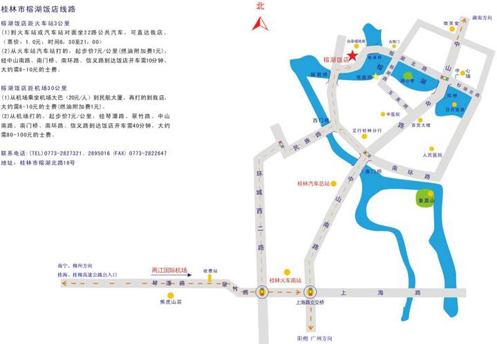
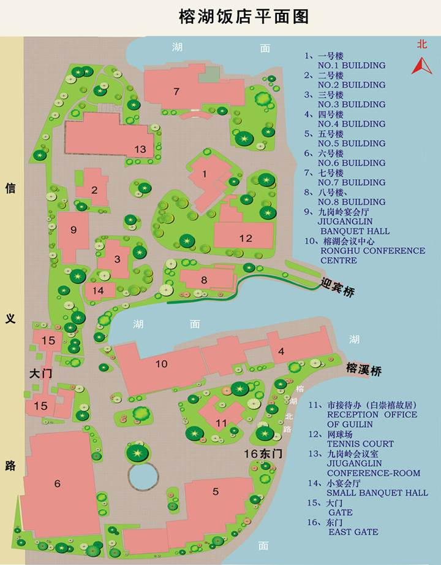

- Main Page
- Ideal2018 Entrance
- Important Dates
- Call for Papers
- Programme
- Plenary Talks
- Panel Discussion
- Tutorials
- WorkShop
- Special Sessions
- Best Paper Awards
- Paper Submission
- Indexing
- Journal Issues
- Registration
- Venue
- Accomodation
- Travel
- Visa
- Local Attractions
- Organizing Committee
- Sponsors
- Contact
- Previous Events
18th International Conference on Intelligent Data Engineering
and Automated Learning – IDEAL 2017
October 30-November 1, 2017 – Guilin, China
Programme Outline
Program at a Glance
|
Time Schedule |
30 Oct. 2017 Monday |
31 Oct. 2017 Tuesday |
1 Nov. 2017 Wednesday |
|
08:10h – 08:50h |
Registration and authors' kits (Registration desk open all three days) |
Technical Sessions T1 |
Technical Session W1 |
|
08:50h - 09:30h |
Opening |
||
|
09:30h - 10:30h |
Plenary Talk 1 Hojjat Adeli Ohio State University |
Plenary Talk 2 XiZhao Wang ShenZhen University |
Tutorial:
Language understanding with knowledge graphs Yanghua Xiao, Deqing Yang, Wanyun Cui Fudan University |
|
10:30h - 11:00h |
Coffee/Tea Break |
Coffee/Tea Break |
Coffee/Tea Break |
|
11:00h - 12:30h |
Technical Session M1 |
Technical Session T2 |
Technical Session W2 |
|
12:30h - 14:00h |
Lunch |
Lunch |
Lunch |
|
14:00h - 16:00h |
Technical Session M2 |
Plenary Talk 3 Xiaoyang (Sean) Wang Fudan University |
Technical Session W3 |
|
Technical Session T3 |
|||
|
16:00h – 16:30h |
Coffee/Tea Break |
Coffee/Tea Break |
Coffee/Tea Break |
|
16:30h – 18:00h |
Technical Session M3 |
Technical Session T4 |
Closing/Social
Tour |
|
18:00h – 18:30h |
Free |
Free |
|
|
18:30h – 21:30h |
Welcome Reception |
Conference Dinner |
|
Note : the general assembly overview below can be freely download
The 18th International Conference on Intelligent Data
Engineering and Automated Learning (IDEAL2017)
Final Program
October 30-November 1, 2017
Guilin, Guangxi, China
Tips
1. Time：October 30-November 1,
2017
2. Venue：Guilin Ronghu Lake Hotel
3. Registration:
Time：14：00--21：00, Oct. 29 and 08：10--08：50, October. 30
Location：Guilin
Ronghu Lake Hotel
4. Access:
a、From
Guilin Liangjiang Airport: It is 28.6km (about 45 min) distance
between the airport and the hotel. You can take the airport shuttle or a taxi
to the hotel.
b、From
Guilin Railway Station: It is 2.5km (about 10 min) distance
between the Station and the hotel. You can take bus No.22 to Ronghu Lake Hotel
bus-station, then walk (about 550m) to the hotel or take a taxi.
c、From
Guilin West Railway Station: It is 14km
(about 49 min) distance between the Station and the hotel. You can take bus No.22
to Ronghu Lake Hotel bus-station, then walk (about 550m) to the hotel or take a
taxi.
d、From
Guilin North Railway Station It is 8km
(about 36 min) distance between the Station and the hotel. You can take bus No.1
to Ronghu Lake Hotel bus-station, then walk (about 700m) to the hotel or take a
taxi.
5. Contact Us：Fengying Li：13978393760; Mengyi Qiu: 15578393190
Outline
Guilin
University of Electronic Technology in Brief
School of
computer science and information security in Brief
Guilin
University of Technology in Brief
College of
Information Science and Engineering in Brief
Guangxi
Teachers Education University in Brief
College of
Computer Science and Information Engineering in Brief
The Location
of Ronghu Lake Hotel
Organization
Honorary
Chairs
Hojjat
Adeli, adeli.1@osu.edu
General
Chairs
Hujun Yin,
h.yin@manchester.ac.uk
Tianlong
Gu, cctlgu@guet.edu.cn
Yang Gao,
gaoy@nju.edu.cn
Program
Chairs
Guoyong Cai, ccgycai@guet.edu.cn
Songcan
Chen, s.chen@nuaa.edu.cn
Junping
Du, junpingd@bupt.edu.cn
Antonio Tallón, atallon@us.es
Publicity
Co-Chairs
Emilio
Corchado, escorchado@ubu.es
Jose A. Costa,
jafcosta@gmail.com
Organizing
Committee
Yimin Wen,ymwen@guet.edu.cn
Minling Zhang,zhangml@seu.edu.cn
Changan Yuan,yca@gxtc.edu.cn
Xiaohui Cheng,cxiaohui@glut.edu.cn
Yingzhou Bi,byzhou@163.com
Xiaolan Xie, xie_xiao_lan@glut.edu.cn
Steering
Committee
Hujun Yin (Co-chair),Laiwan Chan (Co-chair),Guilherme
Barreto,Yiu-ming Cheung,Emilio Corchado,Jose A. Costa,Colin Fyfe,Marc van Hulle,Samuel
Kaski,John Keane,Jimmy Lee,Malik Magdon-Ismail,Vic Rayward-Smith,Peter Tino,Zheng
Rong Yang,Ning Zhong
Organized by
CAAI and Guilin University
of Technology
Co-Sponsored
by
CAAI Machine Learning
Taskforce
CAAI Intelligent Service
Taskforce
Guangxi Teachers Education
University
Guilin University Of
Technology
Guangxi Key Lab of Trusted
Software
Yocsef Guilin
Supported by
Springer
Program at a Glance
|
Time Schedule |
30 Oct. 2017 Monday |
31 Oct. 2017 Tuesday |
1 Nov. 2017 Wednesday |
|
08:10h – 08:50h |
Registration and authors' kits (Registration desk open all three days) |
Technical Sessions T1 （8：30-9：30） |
Technical Session W1 （8：30-9：30） |
|
08:50h - 09:30h |
Opening |
||
|
09:30h - 10:30h |
Plenary Talk 1 Hojjat Adeli Ohio State University |
Plenary Talk 2 XiZhao Wang ShenZhen University |
Tutorial:
Language understanding with knowledge graphs Yanghua Xiao, Deqing Yang, Wanyun Cui Fudan University |
|
10:30h - 11:00h |
Coffee/Tea Break |
Coffee/Tea Break |
Coffee/Tea Break |
|
11:00h - 12:30h |
Technical Session M1 |
Technical Session T2 |
Technical Session W2 |
|
12:30h - 14:00h |
Lunch |
Lunch |
Lunch |
|
14:00h - 16:00h |
Technical Session M2 |
Plenary Talk 3 Xiaoyang (Sean) Wang Fudan University |
Technical Session W3 |
|
Technical Session T3 |
|||
|
16:00h – 16:30h |
Coffee/Tea Break |
Coffee/Tea Break |
Coffee/Tea Break |
|
16:30h – 18:00h |
Technical Session M3 |
Technical Session T4 |
Closing/Social
Tour |
|
18:00h – 18:30h |
Free |
Free |
|
|
18:30h – 21:30h |
Welcome Reception |
Conference Dinner |
|
Notes:
1） Regisration is arranged at the reception
hall of No.6 building;
2） All the plenary talks, technical sessions,
and tutorial are held in Qiuyunting which is located in the second floor of
No.6 building;
3） Guest rooms are distributed in No.5
building or No.6 building;
4） Lunch is all arranged in Yangguangcheng
which is located in the first floor of No.6 building;
5） Welcome reception is arranged at Hujingting
which is located in the sixth floor of No.5 building;
6） The conference dinner is arranged at Qiuyunting.
备注:
1） 会议报到在6号楼的接待大厅；
2） 会议地点在6号楼2楼秋韵厅；
3） 住宿位于5号楼或者6号楼；
4） 会议中餐在6号楼1楼阳光城巴西烧烤餐厅；
5） 30日欢迎宴在5号楼6楼的湖景厅；
6） 31日晚宴在6号楼2楼的秋韵厅.
Plenary Talks
Plenary Talk 1: Machine Learning
and Classification Algorithms
(Hojjat Adeli, Ohio State University, US)
9:30 -10:30 a.m., Oct. 30
Abstract:
Some of the recent advances in machine learning and
classification algorithms are reviewed with a focus on new classification algorithms
developed by the author and his associates including the Enhanced Probabilistic
Neural Networks (EPNN) of Ahmadlou and Adeli and the Neural Dynamic
Classification (NDC) algorithm devel-oped recently by Rafiei and Adeli (2017)
based on the robust patented neural dynamics optimization model of Adeli and
Park. Recent applications of the Deep Boltzmann Machine (DBM), EPNN, and NDC
are presented from both engineering and medical fields such as computer-aided
diagnosis of Parkinson’s disease, earthquake early warn-ing systems, and damage
detection in highrise building structures.
About the Speaker:
Hojjat Adeli received his
Ph.D. from Stanford University in 1976 at the age of 26. He has authored over
590 research and scientific publications including 16 books in vari-ous fields
of computer science, engineering, applied mathematics, and medicine. In 1998 he
received the Distinguished Scholar Award, from The Ohio State University (OSU)
“in recognition of extraordinary accomplishment in research and scholarship”.
He is the recipient of numerous other awards and honors such as the OSU College
of Engineering Lumley Outstanding Research Award (quadruple winner); Peter L.
and Clara M. Scott Award for Excellence in Engineering Education, and Charles
E. MacQuigg Outstanding Teaching Award, a Special Medal from The Polish Neural
Network Society in Recognition of Outstanding Contribution to the Development
of Computational Intelligence, Eduardo Renato Caianiello Award for Excellence
in Scien-tific Research from the Italian Society of Neural Networks and an
Honorary Doctorate from Vilnius Gediminas Technical University, Lithuania. He
is the Founder and Edi-tor-in-Chief of Computer-Aided Civil and Infrastructure
Engineering, now in 32nd year of publication and Integrated Computer-Aided
Engineering, now in 25th year of publi-cation. He is also the Editor-in-Chief
of International Journal of Neural Systems. He is a Distinguished Member of
ASCE, and a Fellow of AAAS, IEEE, AIMBE, and Ameri-can Neurological
Association.
Plenary Talk 2: Big Data
Learning with Uncertainty
(XiZhao Wang, ShenZhen University,
China)
09:30 -10:30 a.m., Oct. 31
Abstract:
Big data refers to the datasets that are so large that
conventional database management and data analysis tools are insufficient to
work with them. Big data has become a bigger-than-ever problem with the quick
developments of data collection and storage technologies. Model simplification
is one of the most popular approaches to big data processing. After a brief
tutorial of the existing techniques of processing big data, this talk will
present some key issues of learning from big data with uncertainty, focusing on
the impact of handling uncertainty and the challenges uncertainty brings to big
data learning. It shows that the representation, measure, and handling of the
uncertainty have a significant influence on the performance of learning from
big data. Some new advances in our Big Data Institute regarding the research on
big data analysis and its applications to different domains are briefly
introduced.
About the Speaker:
Prof. Wang’s major research
interests include uncertainty modeling and machine learning for big data. Prof.
Wang has edited 10+ special issues and published 3 monographs, 2 textbooks, and
200+ peer-reviewed research papers. By the Google scholar, the total number of
citations is over 5000 and the maximum number of citation for a single paper is
over 200. Prof. Wang is on the list of Elsevier 2014/15/16 most cited Chinese
authors. As a Principle Investigator (PI) or co-PI, Prof. Wang's has completed
30+ research projects. Prof. Wang is an IEEE Fellow, the previous BoG member of
IEEE SMC society, the chair of IEEE SMC Technical Committee on Computational
Intelligence, and the Chief Editor of Machine Learning and Cybernetics Journal.
Plenary Talk 3: Supporting Smart
Exploratory Data Analysis
(Xiaoyang (Sean) Wang, Fudan University, China)
14:00 -15:00 p.m., Oct. 31
Abstract:
To achieve desired analysis results, data analysis traditionally
repeats the following process: Data analytic professionals work together domain
experts to carefully select the data and the analysis models, and then apply
analysis tools. With the rapid growth of data volume, and the emergence of new
data, applications increasingly need to use "dark data” (or unfamiliar
data) in addition to familiar, domain-specific data. At the same time, the
demand for data analysis in various areas is increasing rapidly, creating a
severe shortage of professional data analysts. As a result, data analysis is experiencing
two changes: (1) The data used in analysis is changing from mostly
domain-specific data to data from multiple, often unfamiliar, sources; (2) Data
analysis practitioners are changing from only computer scientists or
statisticians and other technical experts to experts in the application
domains. Therefore, how to provide tools that will help user in their analysis
tasks has become an important research subject. This talk will discuss the
possibility in providing such tools that are collectively called
"intelligent data analysis system”, and introduce several preliminary
attempts.
About the Speaker:
Xiaoyang Sean Wang is
Professor at the School of Compute Science of Fudan University. He received his
PhD degree in Computer Science from the University of Southern California in
1992. Before joining Fudan University in 2011, he was the Dorothean Chair
Professor in Computer Science at the University of Vermont between 2003-2011
and Assistant/Associate Professor in the Department of Information and Software
Engineering at George Mason University during 1992-2003, and during 2009-2011,
he served as a Program Director at the National Science Foundation in the
Division of Information and Intelligent Systems. He has published widely in the
general area of databases and information security, and was a recipient of the
US National Science Foundation Research Initiation and CAREER awards. His
research interests include database systems, information security, data mining,
and sensor data processing.
Tutorial: Language understanding with knowledge graphs
(Yanghua Xiao, Deqing Yang, Fudan
University, China)
9:30 -10:30 a.m., Nov. 1
Abstract:
One of the bottlenecks in machine intelligence is that machines
have limited cognitive capability to understand data or text in the form of
human language. Recently, with more and more online knowledge bases (also known
as knowledge graphs) being published, we have a brand new opportunity to
empower machines with the capability to understand natural language. In this tutorial,
I will systematically review the recent progress in enabling machines with the
cognitive ability to understand natural language and discuss some open
problems. Specifically, we will introduce (1) the preliminary concepts of
knowledge graphs, (2) the recent process about knowledge graph construction,
(3) language understanding models and algorithms based on knowledge graphs, (4)
applications empowered with knowledge graphs, such as QA on knowledge base,
knowledgeable search and recommendation.
About the Speaker:
Yanghua Xiao got his PHD degree in software theory from Fudan
University, Shanghai, China, in 2009. He now is an associate professor of
computer science at Fudan University. His research interest includes big data
management and mining, graph database, knowledge graph. He won the Best Phd
Thesis Nomination of CCF (Chinese Computer Federation)，CCF Natural Science Award
(second level), ACM(CCF) Shanghai distinguished young scientists nomination
award. Recently, he has published 70+ papers in top-tier international journals
and conferences, including TKDE, SIGMOD, VLDB, ICDE, IJCAI, AAAI. He is the PI
or Co-PI of 30+ projects supported by 10+ National and Local funding agency and
big companies including Microsoft, IBM, HUAWEI, China Telecom, China Mobile,
Baidu, XiaoI Robot etc. He regularly serves as the reviewer of 10+ national and
local funding agencies and PC members of 50+ top conferences including IJCAI,
AAAI, SIGKDD, ICDE, WWW, CIKM, ICDM, SDM etc. He is the Associate Editor of
Frontier of Computer Science, and reviewers of 10+ leading journals such as
Plos One, IEEE Tansaction on Computers, TKDE. He is a member of ACM, IEEE, AAAI
and senior member of CCF. He is the director of Knowledge Works at FUDAN Uni.
He built the first knowledge service platform in China (kw.fudan.edu.cn), which
serves industries with 200Millions+ API calls. He is the chief scientist or
senior advisors of many top Chinese big data companies or AI companies.
Deqing Yang is an associate
professor in School of Data Science at Fudan University, who got his Ph.D of
Computer Science in 2013 from School of Computer Science at Fudan University.
Prof. Yang’s main research interests include database and machine learning,
especially for knowledge graph with applications to recommender systems and
social network mining. Yang's research publications have been recognized by
many notable international conferences in data mining and related fields,
including ICDM, WWW, ECML, CIKM, DASFAA and etc.
Technical Program
|
Time Schedule |
30 Oct. 2017, Monday |
|
08:10h – 08:50h |
Registration and authors'
kits |
|
08:50h - 09:30h |
Opening |
|
09:30h - 10:30h 主持人：Songcan Chen |
Keynote Talk 1: Machine
Learning and Classification Algorithms Hojjat Adeli, Ohio
State University |
|
10:30h - 11:00h |
Coffee/Tea Break |
|
11:00h - 12:30h 主持人：何倩 |
Technical Session
M1: Machine Learning 1.
Learning
Convolutional Ranking-score Function by Query Preference Regularization ID 3 （Guohui Zhang, Gaoyuan
Liang, Weizhi Li, Jian Fang, Jingbin Wang, Yanyan Geng, and Jing-Yan Wang） 2.
Multi-output
LSSVM-Based Forecasting Model for Mid-term Interval Load Optimized by SOA and
Fresh Degree Function ID 13 （Huiting Zheng, Jiabin Yuan
and Chang Zhao） 3.
A
Potential-based Density Estimation Method for Clustering using Decision Graph ID 15 (Huanqian Yan, Yonggang Lu and Li Li) 4.
SibStCNN
and TBCNN + kNN-TED: New Models over Tree Structures for Source Code
Classification ID
26 （Anh Viet Phan, Minh Le
Nguyen and Lam Thu Bui） 5.
Clustering by Searching Density Peaks via Local
Standard Deviation ID 51 (Juanying
Xie, Weiliang Jiang and Lijuan Ding) 6.
Convolutional Neural Networks for Unsupervised
Anomaly Detection in Text Data ID 86 （Oleg Gorokhov, Mikhail
Petrovskiy and Igor Mashechkin） |
|
12:30h - 14:00h |
Lunch （Yangguangcheng） |
|
14:00h - 16:00h 主持人：谢娟英 |
Technical Session M2: Data Mining 1. Heterogeneous
Context-aware Recommendation Algorithm with Semi-supervised Tensor
Factorization ID 42 （Guoyong Cai and Weidong Gu） 2. Applying Random
Forest to Drive Recommendation
ID 83 （Qiang Lu, You Xu, Yixin Chen, Ruoyun Huang, and
Ling Chen） 3. Universum
Discriminant Correlation Canonical Analysis ID 97 （Xiaohong Chen, Hujun Yin, Menglei Hu and Liping
Wang） 4. Finding
Sentiment in Noise: Non-Linear Relationships between Sentiment and Financial
Markets ID 100 （Zeyan Zhao, Stephen Kelly and Khurshid Ahmad） 5. Fuzzy 2D-LDA Face recognition Based on Sub-image ID 58 （Xingrui
Zhang, Yulian Zhu and Xiaohong Chen） 6. Standardised
Reputation Measurement ID 91 (Peter Mitic) 7. Is a Reputation
Time Series White Noise? ID 92 (Peter Mitic) 8. Research on the
Method of Splitting Large Class Diagram Based on Multilevel Partitioning ID 33 （JinShuai Li, XiaoFei Zhao and BaoShan Sun） |
|
16:00h – 16:30h |
Coffee/Tea Break |
|
16:30h – 18:00h 主持人：缪裕青 |
Technical Session
M3: Evolutionary Algorithms 1.
An
Ant Colony Random Walk Algorithm for Overlapping Community Detection ID 5 （TianRen Ma and Zhengyou Xia） 2.
Evolving
Technical Trading Strategies Using Genetic Algorithms: A Case About Pakistan
Stock Exchange ID 61 （Basit Tanvir Khan, Noman
Javed, Ambreen Hanif and Muhammad Adil Raja） 3.
A
Hybrid Evolutionary Approach with Adaptive Mutation and Crossover to
Collaborative Learning Team Formation in Higher Education ID 63 （Virginia Yannibelli and
Analía Amandi） 4.
Exploring
Elitism in Genetic Algorithms for License Plate Recognition with
Michigan-style Classifiers ID 73 (Dante Giovanni Sterpin Buitrago and
Fernando Martínez Santa) 5.
Chaotic
Brain Storm Optimization Algorithm
ID 95 (Eva Tuba, Edin Dolicanin and Milan Tuba) 6. Object Detection with Proposals in
High-Resolution Optical Remote Sensing Images ID 43 (Huoping
Ding, Qinhao Luo, Zhengxia Zou, Cuicui Guo and Zhenwei Shi) |
|
18:00h – 18:30h |
Free |
|
18:30h – 21:30h |
Welcome Reception
(Hujingting) |
|
|
|
|
Time Schedule |
31 Oct. 2017, Tuesday |
|
08:30h – 09:30h 主持人：谢晓兰 |
Technical Session T1: Data Mining 1.
Using
The Multivariate Normal To Improve Random Projections ID 69 (Keegan Kang) 2.
A
Pay as You Use Resource Security Provision Approach Based on Data Graph,
Information Graph and Knowledge Graph
ID 80 (Lixu Shao, Yucong Duan, Lizhen Cui, Quan
Zou and Xiaobing Sun) 3.
Stochastic
and no-stochastic feature selection
ID 102 （Antonio J.
Tallón-Ballesteros, Luís Correia and Sung-Bae Cho） 4.
Understanding
Matching Data Through Their Partial Components ID 103 (Pablo Álvarez de Toledo, Fernando Núñez,
Carlos Usabiaga and Antonio J. Tallón-Ballesteros) |
|
09:30h - 10:30h 主持人：Yang Gao |
Keynote Talk 2: Big
Data Learning with Uncertainty XiZhao Wang, ShenZhen
University |
|
10:30h - 11:00h |
Coffee/Tea Break |
|
11:00h - 12:30h 主持人：常亮 |
Technical Session T2: Pattern Recognition 1. A Robust Object
Tracking Method Based on CamShift for UAV videos ID 12 （Chang Zhao, Jiabin Yuan and
Huiting Zheng） 2. Cost Sensitive
Matrix Factorization for Face Recognition ID 28 （Jianwu Wan, Ming Yang and
Hongyuan Wang） 3. Identification
of Nonlinear System Based on Complex-valued Flexible Neural Network ID 30 （Lina Jia, Wei Zhang and Bin Yang） 4. Ford Motorcar
Identification from Single-camera Side-view Image Based on Convolutional
Neural Network ID 34 （Shui-Hua Wang, Wen-Juan Jia and Yu-Dong Zhang） 5. Face
Anti-spoofing Algorithm Based on Gray Level Co-occurrence Matrix and Dual Tree
Complex Wavelet Transform ID 38 （Xiaofeng Qu, Hengjian Li and Jiwen Dong） 6. High-accuracy
Deep Convolution Neural Network for Image Super-resolution ID 39 （Wen'an Tan and Xiao Guo） 7. Markov Random
Field Based Convolutional Neural Networks for Image Classification ID 68 （Yao Peng and Hujun Yin） |
|
12:30h - 14:00h |
Lunch （Yangguangcheng） |
|
14:00h - 15:00h 主持人：Hujun Yin |
Keynote Talk 3: Supporting
Smart Exploratory Data Analysis Xiaoyang (Sean) Wang, Fudan
University |
|
15:00h - 16:00h 主持人：林熠明 |
Technical Session T3: Optimization and Strategies 1. Optimization of
Grover's Algorithm Simulation Based on Cloud Computing ID16 （Xuwei Tang, Juan Xu and Ye Zhou） 2. Consensus-based
Parallel Algorithm for Robust Convex Optimization with Scenario Approach in
Colored Network ID 41 (Fan Feng and Feilong Cao) 3. The Theory of
Modified Rings Game ID 67 （Yushuang Wu, Yuhao Lin, Xiaoyu Chen and Xingguo
Chen） 4. An Investment
Defined Transaction Processing towards Temporal and Spatial Optimization with
Collaborative Storage and Computation Adaptation ID 81 （Yucong Duan, Lixu Shao,
Xiaobing Sun, Donghai Zhu, Xiaoxian Yang, and Abdelrahman Osman Elfaki） 5. Solving the
Bi-Criteria Max-Cut Problem with Different Neighborhood Combination
Strategies ID 88 （Li-Yuan Xue, Rong-Qiang
Zeng, Zheng-Yin Hu and Yi Wen） |
|
16:00h – 16:30h |
Coffee/Tea Break |
|
16:30h – 18:00h 主持人：张敬伟 |
Technical Session T4: Pattern Recognition 1. Towards Spectral-Texture Approach to Hyperspectral Image Analysis for
Plant Classification ID 46 (Ali AlSuwaidi,
Bruce Grieve and Hujun Yin) 2. Artifact Removal Methods in Motor Imagery of EEG ID 50 （Yanlong Zhu,
Zhongyu Wang, Chenglong Dai and Dechang Pi） 3.
UK - Means Clustering for Uncertain Time Series
Based on ULDTW Distance (
Xiaoping Zhu, Zongmin Ma and Qijie Tang） 4. Object Recognition Based on Dynamic Random Forest and SURF Descriptor ID 64 （Khaoula Jayech
and Mohamed Ali Mahjoub） 5. Information Retrieval with Implicitly Temporal Queries ID 18 (Jingjing Wang and Shengli Wu ) 6.
Color Image Segmentation by Multilevel Thresholding
Based on Harmony Search Algorithm
ID 98 (Viktor Tuba, Marko Beko and Milan Tuba) 7.
Trajectory Similarity-Based Prediction with Information
Fusion for Remaining Useful Life ID 48 (Zhongyu Wang, Wang Tang and Dechang Pi) |
|
18:00h – 18:30h |
Free |
|
18:30h – 21:30h |
Conference Dinner
& Best Paper Awards(Qiuyunting) |
|
|
|
|
Time Schedule |
1 Nov. 2017,
Wednesday |
|
08:30h – 09:30h 主持人：刘平山 |
Technical Session W1: Social Network Analysis 1. Dynamic
Community Detection Algorithm Based On Automatic Parameter Adjustment ID 4 （Kai
Lu, Xin Wang and Xiaoping Wang） 2. A Community
Detection Algorithm Based on Jaccard Similarity Label Propagation ID 11 （Meng Wang, Xiaodong Cai,
Yan Zeng and Xiaoxi Liang） 3. A Community
Detection Algorithm Based on Local Double Rings and Fireworks Algorithm ID 27 （TianRen Ma and Zhengyou Xia） 4. Predicting
Personality Traits of Users in Social Networks ID 35 （Zhili Ye, Yang Du and Li
Zhao） |
|
09:30h - 10:30h 主持人：Guoyong Cai |
Tutorial: Language understanding with knowledge graphs Yanghua Xiao, Deqing Yang, Wanyun Cui Fudan University |
|
10:30h - 11:00h |
Coffee/Tea Break |
|
11:00h - 12:30h 主持人：李凤英 |
Technical Session W2: Intelligent Methods 1.
Prediction Learning Effect by Learner’s Behavior
in MOOCs ID 90 （Ye Tian, Yimin Wen, Xinhe
Yi, Xi Yang and Yuqing Miao） 2.
Predicting Physical Activities from Accelerometer
Readings in Spherical Coordinate System
ID
9 （Kittikawin Lehsan and
Jakramate Bootkrajang） 3.
Cross-media Retrieval of Tourism Big Data Based on
Deep Features and Topic Semantics
ID 17 （Yang Li, Junping Du, Zijian
Lin and Lingfei Ye） 4.
On the Relations of Theoretical Foundations of
Different Causal Inference Algorithms
ID 20 （Furui Liu and Laiwan Chan） 5.
Research of Dengue Fever Prediction in San Juan,
Puerto Based on KNN Regression Model
ID 29 （Ying Jiang, Guohun Zhu,
Zupeng Zhou and Ling Lin） 6.
Interdisciplinary Approaches to Reduce
Subjectivity in the System Dynamics Modeling Process ID 66 （Jae Un Jung） 7.
Linguistic Truth-Valued Multi-Attribute Decision
Making Approach Based on TOPSIS ID 84
（Yuanyuan Shi, Li Zou,
Yingying Xu, Siyuan Luo and Jia Meng） |
|
12:30h - 14:00h |
Lunch（Yangguangcheng） |
|
14:00h - 16:00h 主持人：李芳 |
Technical Session
W3: Clustering and Classification 1.
Co-clustering
with Manifold and Double Sparse Representation ID 49 (Fang Li and
Sanyuan Zhang) 2.
Cost-Sensitive Alternating Direction Method of
Multipliers for Large-Scale Classification ID 56 (Huihui
Wang, Yinghuan Shi, Xingguo Chen and Yang Gao) 3.
Generation of Reducts and Threshold Functions and
its Networks for Classification ID 72 (Naohiro
Ishii, Ippei Torii, Kazunori Iwata, Kazuya Odagiri and Toyoshiro Nakashima) 4.
A comparative study on Lagrange Ying-Yang
alternation method in Gaussian mixture-based clustering ID 85 (Weijian
Long, Shikui Tu and Lei Xu) 5.
An
Improved Density Peak Clustering Algorithm ID 40 （Jian Hou and Xu E） 6.
Semi-supervised Regularized Discriminant Analysis
for EEG-based BCI System ID 89 (Yuhang
Xin, Qiang Wu, Qibin Zhao and Qi Wu) 7.
Sparse Representation Based on Discriminant
Locality Preserving Dictionary Learning for Face Recognition ID 55 (Guang
Feng, Hengjian Li, Jiwen Dong and Xi Chen) 8.
Face Attributes Retrieval by Multi-Label
Contractive Hashing ID
47 (Xuan Zhao, Xin Jin and Xiao Guo) |
|
16:00h – 16:30h |
Coffee/Tea Break |
|
16:30h – 18:30h |
Closing/Social Tour |
Guilin University of Electronic
Technology in Brief
Guilin
University of Electronic Technology (GUET) is cataloged a key public university
of Guangxi which is jointly sponsored by the Ministry of Industry and
Information Technology and Guangxi Zhuang Autonomous Region. It is one of the
four universities focusing on electronic technology in China. Founded in 1960,
with sustainable development, GUET has shaped a multidisciplinary university
focusing in engineering-based teaching and featuring electronic information and
technology.
Located in
the world-famous city of Guilin and Beihai, GUET owns three campuses: Huajiang
Campus, Jinjiling Campus and Beihai Campus, covering an area of 1,000 acres.
The university now has 22 colleges, covering 7 disciplines in engineering,
science, management, economics, liberal arts, law and art. It offers 65
undergraduate programs, 30 postgraduate programs including 139 research
directions, and 3 doctorate programs.
GUET
possesses over 3000 faculties and staff. Students from different campuses
amount to 36,000. Additionally, GUET has built one of the largest libraries in
china with 42,000 square meters, 2 million books, 19,000 kinds of Chinese and
foreign journals and 71 databases. It designs advanced internet information
platforms and excellent environment for learning.
Recently
GUET has established good cooperative relationships with more than 160
universities and academic institutions in Asia, Europe, the Americas, Oceania
and Africa, building strategic partnerships with 80 universities. Presently,
there are 1300 international students from over 20 countries and regions
studying in GUET. GUET and UCC (University College Cork) have joined hands to
cultivate undergraduates based on Internet Engineering Program. The university
provides “China’s Government Scholarship” and “Guangxi Government Full
Scholarship for ASEAN Students” for international students with doctorate, master,
bachelor programs.
School of computer science and
information security in Brief
School of
computer science and information security of GUET is the earliest unit of
computer professional education in Guangxi Provincial. In 1981, undergraduate
students began to enroll. In 1996, it began to recruit postgraduates. In 2006,
it began to train master for computer engineering. The school has always
followed the educational philosophy of "thick foundation, essence theory,
good practice, strong ability", guided by the motto of "Learn to be
good, and to be new" and the spirit of “Hard work and
self-improvement”,and adhered to the central task of personnel training.
Currently the school has set up a professional chains toward computer
architecture, software development, information processing, security control,
and intelligent computing. It has not only met the development direction of
computer professional education, but also has the characteristics of the
development of the road.
There are
118 full-time teachers in the faculty team, among whom 27 are senior teachers,
36 are senior professional titles, 45 are doctoral teachers, and 6 are doctoral
tutors. One teacher is in the first batch of "national new century talents
project", one teacher in the national model teacher, and 2 people get the
State Council special allowance, 1 people rewarded by Guangxi District
outstanding experts, 1 by Guangxi outstanding scholars, 3 by talents in
Colleges and universities in Guangxi. The school has 1 national teaching teams,
1 teaching teams in Guangxi District, 1 small talent Heights in Guangxi
District, and 1 innovative teams in Guangxi District colleges and universities.
The school
has 6 undergraduate courses, including computer science and technology,
software engineering, information security, Internet of things engineering,
intelligent science and technology, information countermeasure technology.
Among them, computer science and technology is a national characteristic major,
and also one of the second batch of the Ministry of education undergraduate
professional excellence engineer education.Currently about 2500 graduate
students and 300 post graduate students study in the school.
The school
has 3 Guangxi provincial key laboratories which include "Guangxi key lab
of trusted software, Guangxi Key Lab of cryptology and information
security", "Guangxi Key Lab of intelligent processing of image and
graphics".It also has 2
provincial and ministerial level Collaborative Innovation Center which are
"networking technology and industrialization" and "cloud
computing and big data" ; and it has 2 provincial engineering technology
centers which include "Guangxi Cloud Security and cloud services
engineering technology research center, "Guangxi location aware and
location service engineering research center.
Guilin
University of Technology in Brief
Guilin
University of Technology (GUT) originated from Guilin geological school, which
was established in Guangxi in 1956,through five changes of ownership, and it
changed school name for 10 times .1978 it was renamed Guilin metallurgical
geology college.1993 it was renamed Guilin institute of technology.2009 it was
officially renamed Guilin University of Technology. Chinese academy of
engineering, QuJiuHui is appointed for the school reputation principal. There
are four campuses with a total area of over 3000 squares.
There are 19
secondary teaching units in the school, 72 undergraduate majors, 50 higher
vocational colleges, and 22 regional majors. All kinds of full-time students of
over 32,000; Have 2 postdoctoral scientific research, three doctorate
authorization center, 16 primary discipline master's degree authorization
centers, five professional degree category, recommend excellent fresh graduate
subject study for a postgraduate qualification. It has 7 big disciplines about
technology, engineering, science, management, law and art.
There are
more than 1400 full-time teachers in the school, including 670 senior
professional technical staff and 63 doctoral supervisors. The university has
"national pacesetter project choice", national "one thousand
project", the Chinese academy of sciences, national "one hundred
project" scholars ", having made outstanding contribution to the
young and middle-aged expert", the national natural science outstanding
youth fund gainer, enjoy special government allowances of the state council,
experts and the national model teacher outstanding teachers, the ministry of
education funding schemes such as national high-level experts, staff 61 people,
"BaGui scholars" in guangxi, distinguished experts and scholars,
outstanding experts, outstanding teachers, outstanding scientific and
technological personnel, "1000 talent project", such as teaching
masters in universities in guangxi provincial high-level personnel 64 people.
There are
one State Key Laboratory cultivation, one Key Laboratory of Ministry of
Education, one Engineering Research Center of Ministry of education, 24 Guangxi
key subjects, seven Guangxi Key Laboratories, etc. The Autonomous Regional
University Science Park has been established, and it has become a sub Park of
Guilin National University Science and Technology Park, and has been recognized
as the "demonstration zone of technology transfer in the autonomous
region".
In recent
years, assume the national and provincial level of more than 2600
scientific research projects, including "973", "863"
special plan, the National Natural Science Foundation, the National Social
Science Foundation and other national 300 projects, 2016 National Youth Project
Zero breakthrough. Since 2013, the total research funding has exceeded 100
million Yuan.
The school
has more than 30 countries and regions, more than 100 universities to establish
friendly and cooperative relations, with more than 50 universities signed an
exchange student, academic exchanges and research cooperation agreement.
College of
Information Science and Engineering in Brief
The college
of Information Science and Engineering (CISE) of GUT is established in 2009,
which grew out of the Applied Physics & Computer Science (established in
1992) and the Electronics & Computer Science (established in 1997).
Currently, the college has 91 staff employed, including full-time teachers of
81, and the senior titled of 12, and the sub-senior titled of 30, and 20 with
doctor degree.
The college
is of solid foundation, possessing the subject category of doctor program (the
automation science and engineering), university key subject in Guangxi
province(technology of Computer Application), Master's degree program(the
computer science &technology and the software engineering), professional
degree of “the outstanding engineers plan” by the Ministry of Education (The
computer technology) , university key label course in Guangxi province
(Embedded technology and intelligent information processing), experimental
teaching and demonstration center on district level ( Information and
manufacturing engineering training center ), manufacturing informatization
promotion and application center in Guilin city, excellent courses on district
level (C language program design and computer networking), and experimental
teaching center on school level. The college jointly established more than 20
internship bases with the research institutes and the enterprises.
At present,
the college has set up 6 undergraduate majors, including Computer Science and
Technology, Electronic Information Engineering, Telecommunication Engineering,
Network Engineering, Internet of Things Engineering and Software Engineering.
There are more than 2100 students, of whom more than 2000 are undergraduates
and the rest are postgraduates. The college has good experimental conditions,
with electronic and electrical experimental teaching center, computer
experimental teaching center, information and control technology experimental
teaching center and computer basic experimental teaching center. The total area
of the laboratory is about 2600 square meters, and the total value of all kinds
of instruments and equipment is about 28 million yuan.
In recent
years, the scientific research work develops rapidly, obtaining a total of 100
research projects, including 15 the national research projects and 51
provincial scientific research projects. The total project fund is about 25
million yuan. The research achievements have won one second prize and three
third prize in Guangxi Science and Technology Progress Award. The college
published more than 800 papers, including more than 460 papers on core
journals, and three major searches taking on more than 300 papers.
Guangxi
Teachers Education University in Brief
Guangxi
Teachers Education University (GTEU), located in Nanning, the capital city of
Guangxi Zhuang Autonomous Region, was founded in 1953 and originally named as
Guangxi Teacher Training College. Ratified by China State Council in December
1978, it was upgraded as a province-governed general higher normal institution
which practices full-time undergraduate programs. Ratified by the Academic
Degrees Committee of the State Council in 1998, GTEU was approved as a Master
Degree authorized university. In 2008, GTEU was awarded the Grade of Excellence
in the Evaluation on Teaching Outcome of Undergraduate Programs, organized by
the China Ministry of Education. In 2013, GTEU was approved to be Guangxi
Project Construction Unit for the New Doctor Degree Conferring Unit.
GTEU has
three campuses – Mingxiu, Changgang and Wuhe, with an area of 1688.7 mu (about
115 hectares). The total value of teaching and research apparatus and equipment
in GTEU is RMB 130,300,000 Yuan while the library stores 2,850,000 books and
other publications (including 1,290,000 e-books). GTEU has 21 faculties, six
auxiliary teaching units, 43 research institutes, one affiliated demonstrative
school and one jointly-run independent college. GTEU now has 12,482 full-time
undergraduates, 158 diploma students, 1,146 MA candidates, 148 foreign students
and 20,080 students of adult higher education programs.
GTEU sets up
10 discipline categories: Philosophy, Economy, Law, Pedagogy, Literature,
History, Sciences, Engineering, Management and Art. It offers 63 undergraduate
programs which include four major construction points of higher education
institutions of the Ministry of Education, one elaborate major at autonomous
region level, one key major at autonomous region level, nine excellent majors
of Guangxi higher education institutions, and eight competitive special major
construction points of Guangxi higher education institutions. GTEU has 11
master degree authorized units of the first grade disciplines, 43 master
degrees authorized units of the second grade disciplines and four professional
master degrees authorized units. In 2013, GTEU was granted with the Guangxi
government’s special financial support for Guangxi Project Construction Unit
for the New Doctor Degree Conferring Unit.
Address: No.
175 East Mingxiu Road, Nanning, Guangxi, P.R. China 530001
Website: http://www.gxtc.edu.cn
College of
Computer Science and Information Engineering in Brief
College of
Computer Science and Information Engineering of GTEU was established in January
2009, integrating the IT specialty resources of majors such as Computer Science
and Technology (teachers education), Educational Technology, and so on. After
years of construction and development, the college has formed a multi-level
school-running system including postgraduate, undergraduate and adult
education. The College currently has two master's degree authorization centers:
in Computer Science and Technology, and Software Engineering; one master's
degree authorization center for secondary disciplines: in Educational
Technology; and three undergraduate majors: Computer Science and Technology,
Software Engineering, Educational Technology. The College now has more than
1000 students, including 73 graduate students, 725 undergraduate students and
more than 200 adult education class students.
There are
several key laboratories and research bases, such as “the Talent Base of
Scientific Computing and Intelligent Information Processing for Universities in
Guangxi”; the Laboratory of Scientific Computing and Intelligent Information
Processing which is one of the key laboratories among universities in Guangxi;
Jing-Yu Intelligent Information Security Research Base which serves as a key
platform of sci-tech innovation for universities in Guangxi to collaborate with
local businesses; the Institute of Software; the Institute of Information Security;
the Laboratory of Pattern Recognition and Intelligent Systems; the Laboratory
of Intelligent Information Processing; and the Studio of Practice and
Innovation of Science and Technology for College Students .
Since 2016,
Guangxi Teachers Education University-“Sugon Big Data College” is built, as a
part of “Data China ‘Projects for United of a hundred of Colleges and
Universities’” which is a Promotion Plan for Integration of Production and
Education, implemented by both National Center for Schooling Development
Programme and Sugon Information Industry Co.,Ltd. The colleage is administrated
by both enterprise and schools, resources are shared among them and learn from
each other. Achieve the goal of talent training in the form of VIP program.
According to the regional big data industry application characteristics, human
resources demands, cooperate and work out the training program, assessment
methods and standards for assessing the quality of the courses together. With
the cooperation of scientific researches, and the support from the local
governments and also from the enterprises, professional constructions can be
deeply rooted in the development of the industry.
Address: No.
3 Hexing Road, Nanning, Guangxi, P.R. China 530299
Website:
http://jxxy.gxtc.edu.cn
School of Computer Science and Information Security, Guilin
University of Technology
1 Jinji Road, Guilin, Guangxi, 541004
Venue
The venue for
IDEAL 2017 conference will be the Ronghu Lake Hotel (Click
in), which is located in 16 North Ronghu Road (Ronghu Bei Lu),Guangxi, Guilin,
China.
Guilin Ronghu Lake
Hotel was founded in 1953 and built in villa style, which is located in
bustling downtown Guilin on the west bank of tourist favorite Ronghu Lake.
Around the hotel are many extraordinary hills and attractive small lakes,
verdant bamboo trees and weeping willows. On the other side of the lake, are
the famous scenic spots - the Ancient South City Gate and Thousand-year-old
Banyan Tree. It only takes you 10 minutes walking from the hotel to the railway
station, with this advantage of geographical location it brings an unique
inhabiting experience of nature and comfort but also without losing
convenience.
Local Attractions in Guilin
Guilin is a
world famous tourist city where there are more than 30 noted scenic spots.
Guilin is also a renowned historical and cultural city with 2000 years of
history and a famous tourist city, which has a great number of ancient cultural
relics.Li River, the most famous river, winds and meanders its way for 170
kilometers, passing through Guilin, Yangshuo to the outlet of Gongchen river in
Pingle county and then joins the Xi River, which is the upper reaches of Pearl
River. The 83-km-long section from Guilin to Yangshuo has the best scenery and
is the masterpiece of Li River, decorated with rolling hills, steep cliffs,
fantastic caves, leisurely boats and lined bamboos, which constitute a
fascinating hundred-kilometer picture gallery. Gorgeous Karst pinnacles give
you surprises at each bend of the limpid river under the blue sky. Its banks
are covered with lush bamboo and luxuriantly green woods.
Cuisine
Guilin dishes may be one of the reasons why
the people love this city so much. They have an appealing color, aroma, taste
and also appearance. All dishes, whether cheap or expensive, are elaborately
cooked. The local people prefer spicy and sour so much that most of dishes are
served with sour bamboo shoot and sour pepper, and the most famous dishes including
Guilin rice nodle, Yangshuo beer fish, and Gongcheng Camellia.
The
Location of Ronghu Lake Hotel

The Plan of
Ronghu Lake Hotel
